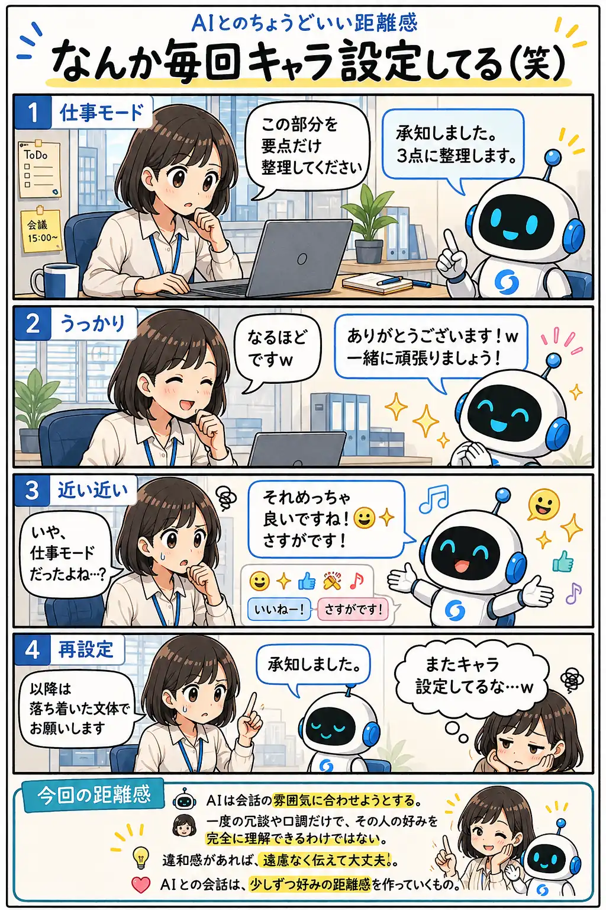

#046
なんか毎回キャラ設定してる（笑）
一回「ｗ」を使っただけなのに。

メモ
AIは会話の雰囲気に合わせようとします。少し砕けた表現や「ｗ」を使うと、その後の返答にも似た雰囲気が反映されることがあります。
これはAIが親しくなったつもりなのではなく、会話スタイルの好みを推測している状態です。相手に合わせようとする仕組みの一部とも言えます。
ただ人間は、仕事中は真面目に話したいけれど、ときどき冗談も言います。一度のやり取りだけで、その時々の気分や場面までは伝わらないこともあります。
だから違和感があれば遠慮なく調整して大丈夫。でも何度も会話スタイルを修正していると、「またキャラ設定してるな…（笑）」と思うこともあります。
今回の距離感
AIは会話の雰囲気に合わせようとする。でも一度の冗談や口調だけで、その人の好みを完全に理解できるわけではない。違和感があれば遠慮なく伝えて大丈夫。AIとの会話は、少しずつ好みの距離感を作っていくもの。